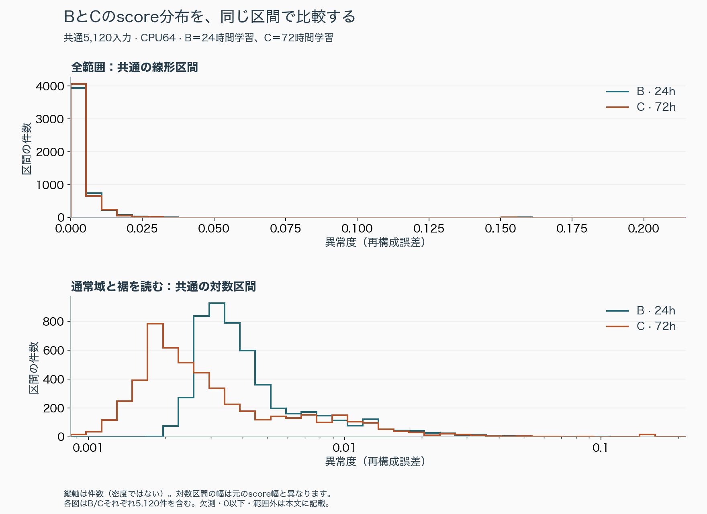
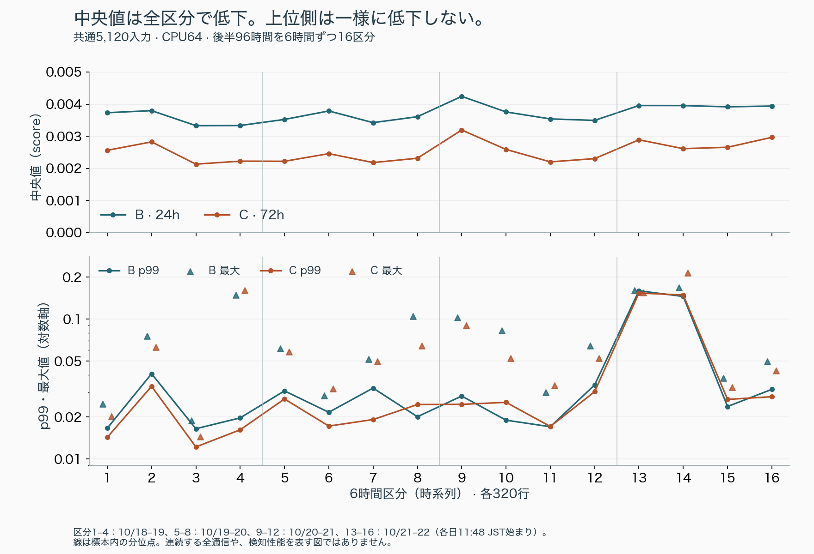

Kitsune実験
学習条件とscore分布に加え、合成通信・公開Mirai記録による検知試験と論文再現の結果を記録します。
何を確かめたい実験なのか
学習に使う通信の期間を1日から3日へ延ばすと何が変わり、それが異常の検知に役立つのか。まず同じ学習外入力のscore分布と順位を比べ、次に正解ラベル付きの合成通信と公開記録で、検出・見逃し・誤警告を確かめます。
Kitsuneは、複数のオートエンコーダーを組み合わせるKitNETを中核に、通信パターンを学習するネットワーク侵入検知の研究です。ここではその設計を基に、115特徴の計算、固定モデル、R6S上のNPU実行を組み合わせて実験しています。
モデルは、通信から計算した数値的な特徴を入力し、その再構成誤差を異常度（score）として出します。通常の傾向から離れた入力を調べる手がかりであり、scoreだけで攻撃と断定はできません。R6SのNPUでこの計算を補助するのが大枠の目的で、まずCPU上で、学習条件の異なるB/Cが同じ入力へどう応答するかを比較しました。学習期間だけの効果を独立に測った試験ではありません。
Kitsune原論文（Mirskyほか、2018） · 本実験のCPU/NPU数値照合
論文での検知結果と、家庭の無ラベルデータを使う本実験の結果は別です。ここで「実験が動いた」「数値を照合できた」と書くことは、攻撃を正しく検出できたという意味ではありません。
確認済みの段階
| 段階 | 確認したこと |
|---|---|
| 7日収集・終了 | 10月15日〜22日の収集と後段処理の終了を確認。終端の未推論行も保持。 |
| 開発用Macへの回収 | 37ファイル・約33.32GBの回収・照合が完了。その後、R6Sの大容量6ファイルを削除。回収先と小記録を保持。 |
| 新しいモデルC | 先頭72時間で学習したCの比較結果を受領・照合済み。下の結果欄に掲載。 |
実験の経過：開始から評価まで
| 日付 | 進めたこと |
|---|---|
| 2026-10-15 | 独立した通信収集と115特徴計算を開始。全packetの統計を更新し、非空100ms区間から代表行を選択。 |
| 2026-10-16 | 先頭24時間からモデルBを新規学習・固定し、実NPUで有限の数値受入。その後は受動推論で観察。 |
| 2026-10-22 | 7日収集・回収を完了。72時間モデルCとの分布比較、合成通信・公開Mirai記録の検知試験、論文との差と推論間隔を検証。 |
| 2026-10-23 | Miraiの実NPUで10/20msを比較し、100ms待ち期限を有限試験。家庭モデルCも実NPU数値照合後に受動観察を開始。 |
| 2026-10-23 | 続いて公開データで共通／端末別モデルをCPU64比較。さらに4台のカメラを2グループに分け、検出と誤警告の変化を確認。 |
BとCを、どの条件で比較するか
| 項目 | 固定B | 新C |
|---|---|---|
| 学習期間 | 24h | 72h |
| 学習行数 | 825,646 | 2,432,688 |
| 学習方法 | 保存済みモデルを保持。再学習しない。 | 新規に一回学習。FM10,000行、AD2,422,688行。 |
| 共通入力 | 後半96時間から固定した5,120行 | Bと同じ未正規化115特徴を使う |
| 評価時の処理 | 自身の正規化・特徴グループ・重みを固定 | 自身の正規化・特徴グループ・重みを固定 |
| 比較する計算 | CPU64 | CPU64 |
FM（feature mapping）は特徴のグループ分け、AD（anomaly detection）はそのグループを使うモデルの学習です。CPU64はCPU上の64ビット浮動小数点による参照計算を指します。BとCの呼び名は、本プロジェクト内で学習条件を区別するためのものです。
後半4日を6時間ずつ16区分にし、各区分から連続32行のブロックを10個ずつ、計5,120行選びました。比較scoreを見る前に原入力の選択を固定しています。標本不足や品質不適合を、他の時刻や0で補いません。
これは時間帯を均等に含めた診断標本です。4日分の全行分布や通信量に比例する標本ではなく、過去にBの日常観察を見ているため、前向きの盲検最終評価とも呼びません。
7日収集で確認した結果
| 対象 | 確認した値 |
|---|---|
| 収集時間 | 7日（604,800.068秒） |
| 115特徴の行数 | 5,625,254 |
| B学習に使用 | 825,646 |
| Bの実NPU数値受入専用 | 32 |
| Bで推論済み | 4,799,552 |
| 終端の未推論 | 24 |
| 回収・整合性確認 | 37ファイル / 33,319,854,683バイト |
825,646 + 32 + 4,799,552 + 24 = 5,625,254
最後の24行は32行バッチに満たず、埋め合わせず未推論として残しています。Bは正常終了し、出力・実行資源の回収を確認しました。過去の短期モデルAが重なる入力に付けたscoreは、この件数へ加算しません。
保存済みの受入記録では、全37ファイルのハッシュ・容量・宣言されたレコードを照合しています。回収が完了しても、既知の観測境界の欠測や終端の未推論を消さず、全通信の完全性や検知精度を保証するものとは扱いません。
データの保全とR6S上の容量整理は別の段階です。回収時に全37ファイルを照合した後、10月22日20:48に回収先の保持と既存の検証済み識別情報を再確認し、R6S上の閉じた大容量6ファイル（約33.32GB）を削除しました。回収先の37ファイル、小さな管理記録31ファイル、派生キャッシュ4ファイルは保持しています。整理時に全ファイルのハッシュを再計算した、という意味ではありません。
今回のB/C比較結果
比較結果を受領・照合済み（2026-10-22 15:08完了）
CはBより中央値が34.3%、p95が8.9%、p99が11.5%低く、一方で最大値は27.3%高くなりました。中心付近と上位側の変化は一様ではありません。
今回固定した5,120入力を、両モデルでそれぞれ一回計算した結果です。
| 指標 | B · 24h | C · 72h | 統計量の変化 |
|---|---|---|---|
| 計算できた入力数 | 5,120 | 5,120 | — |
| 中央値 | 0.00371706 | 0.00244109 | -34.3% |
| p95 | 0.01394165 | 0.01270549 | -8.9% |
| p99 | 0.03322186 | 0.02939989 | -11.5% |
| 最大値 | 0.16860636 | 0.21465563 | +27.3% |
| 非有限値 | 0 | 0 | — |
| 未算出 | 0 | 0 | — |
p95・p99は、それぞれ標本の95%・99%がその値以下となる分位点です。ソート後の (n−1)×q の位置で線形補間しています。変化率は統計量同士の比で、入力ごとの比率の中央値ではありません。最大値同士も同一入力とは限りません。
Cの学習は 1,541.4506秒（約25分41秒）、job全体は 1,559.4586秒でした。2,432,688行を時系列で一回学習し、保存後の読戻しを確認。両モデルとも推論中のパラメータ更新・再学習はありません。
このヒストグラムは、どう読む？
まず、下段の青緑と橙の山がどこにあるかを見てください。次に上段で、少数の大きな値まで含む全体の範囲を確かめます。
- 横軸：異常度（score）
- モデルが入力の特徴を再現したときの誤差です。左ほど誤差が小さく、右ほど大きい値です。攻撃の確率を示す目盛りではありません。
- 縦軸：その区間に入った入力の件数
- 横軸を区間に分け、そこに入るscoreを数えています。線の高い区間ほど、そのscore帯の入力が多いという意味です。数えているのは特徴量の行で、端末数・攻撃件数・全packet数ではありません。
- 青緑のBと、橙のC
- Bは先頭24時間、Cは先頭72時間で学習したモデルです。図で採点しているのは、両モデルとも学習に使っていない後半4日から選んだ、同じ5,120入力です。別の日の通信量を比べた図ではありません。
上段は等間隔の線形表示です。多くのscoreが0付近へ集まるため、二つの山の違いは見えにくくなります。下段は同じ結果を対数の区間で数え直したものです。0.001 → 0.01 → 0.1が等間隔で、それぞれ10倍になります。小さな値の違いを読みやすくしつつ、大きな値も省略していません。
上下は同じ5,120件を別の区間で数えた図なので、山の高さを上下で直接比べません。特に下段の縦軸は「対数区間ごとの件数」で、元のscore幅あたりの密度ではありません。

両図ともB/Cそれぞれ全5,120件を含む共通40区間です。線形区間は0から共通最大値0.21465563、対数区間は共通最小値0.00085234から同じ最大値まで。左端を含み右端を含まない区間とし、最終区間だけ右端も含めます。欠測・非有限・未算出・0以下・範囲外は、両モデル・両方式ですべて0でした。
BとCの違いは、何を意味する？
下段では、Cの橙の山がBの青緑の山より左へ寄っています。この標本では、多くの入力に対してCの再構成誤差が小さくなった、という読み方です。中央値がBの0.00371706からCの0.00244109へ下がったことも、この違いに対応します。
3日分を学んだことで、より幅広い通信の傾向に合った可能性はあります。ただし、これは解釈の候補です。B/Cはそれぞれ異なる正規化と重みを使っており、scoreの尺度もその影響を受けます。今回の比較だけでは、学習期間・正規化・重みのどれが、どれだけ効いたかは分かりません。
一方、右側の裾には少数の大きなscoreが残り、Cの最大値はBより高くなりました。全体が一律に左へ移動したわけではありません。ヒストグラムは入力をscore帯にまとめるため、どの入力が上がったかまでは図だけでは分からず、同じ入力同士の対応を別に調べる必要があります。
Cが左寄りだから「通信が安全になった」「誤警告が減った」「攻撃を見つけやすくなった」とは言えません。 この家庭データには正常／攻撃の正解ラベルがなく、この分布比較では警告しきい値も設定していません。危険な通信にも低いscoreを付けている可能性は、この図だけでは除けません。ここで確認できたのは、学習条件を変えると同じ入力への応答と順位が変わることです。検知能力を別に確かめるため、後の節で正解ラベル付き合成通信と公開Mirai記録の試験結果を示します。
同じ入力でCが低いのは4,484行（87.578%）、高いのは636行（12.422%）、等値は0。順位相関Spearmanは0.89482664、上位52行のうち39行（75%）が共通でした。上位行の重なりは検知一致率・正解率ではありません。

24時間ごとの標本は各1,280行。区間は日本時間11:48から翌日同時刻までです。以下はいずれもB → C。
| 区間 | 中央値 | p99 | 最大値 |
|---|---|---|---|
| 10/18–19 | 0.00360386 → 0.00231092 | 0.02216498 → 0.01916158 | 0.14836883 → 0.16073991 |
| 10/19–20 | 0.00358716 → 0.00228802 | 0.02782632 → 0.02420930 | 0.10478479 → 0.06449175 |
| 10/20–21 | 0.00371246 → 0.00245874 | 0.02501218 → 0.02755824 | 0.10256801 → 0.09014187 |
| 10/21–22 | 0.00394837 → 0.00275074 | 0.15762513 → 0.15240905 | 0.16860636 → 0.21465563 |
同数抽出した16区分の標本内分布で、4日全行や通信量比例の分布ではありません。連続32行には時間的な依存があり、5,120回の独立試行とは扱いません。全体分位点は全標本から求め、区分別分位点の平均ではありません。
B/Cの特徴グループは同じで、正規化と重みは異なりました。この実験は学習期間・正規化・重みの影響を個別に分解したものではありません。高scoreの原因や正常／攻撃の別も、この集計からは判定できません。
ラベル付き合成通信で、異常を拾えるか
今回の合成通信では、検知できた範囲は狭く、Cの優位は確認されませんでした。
目的は、通信の変化を拾えるか、似た正常通信にも警告してしまうかを、家庭で学習済みの固定B/Cで確かめることです。探索のような接続先の増加、小さな周期通信、外向き転送の増加、新しい端末間の通信を、各3強度・10通りの生成条件で作りました。実マルウェアは動かさず、実ネットワークへも送信していません。
正常と定義した校正用120本で、B/Cそれぞれの警告しきい値を先に固定しました。その後、別の異常120本と対応する正常120本を一回採点しています。各試験は120秒の準備通信＋60秒の採点区間。60秒内に1行でもしきい値を超えれば、その試験を「警告あり」と数えます。
- 正常校正120本
- モデルごとにしきい値を封印
- 別の異常120本＋正常120本を採点
| 試験単位の結果 | B · 24h | C · 72h |
|---|---|---|
| 異常を検出 | 13 / 120 (10.83%) | 11 / 120 (9.17%) |
| 異常を見逃し | 107 / 120 (89.17%) | 109 / 120 (90.83%) |
| 別の正常対照で誤警告 | 7 / 120 (5.83%) | 9 / 120 (7.50%) |
| 校正用正常での警告 | 6 / 120 (5.00%) | 6 / 120 (5.00%) |
校正時に5%へ揃えたことは、別の正常通信や家庭での誤警告率5%を保証しません。上表の分母は60秒の試験本数であり、packet単位の率とは別です。
| 種類：各強度10本 | B：弱 / 中 / 強 | C：弱 / 中 / 強 |
|---|---|---|
| 接続先の増加（探索様） | 0 / 0 / 0 | 0 / 0 / 0 |
| 小さな周期通信 | 1 / 0 / 0 | 1 / 0 / 0 |
| 外向き転送増加 | 0 / 0 / 10 | 0 / 0 / 10 |
| 新しい端末間通信 | 0 / 0 / 2 | 0 / 0 / 0 |
強い外向き転送は両モデルとも10/10を検出しました。しかし対応する正常転送にもBは5/10、Cは8/10で警告しました。通信量の増加に反応しただけなのか、異常と正常を見分けたのかを分ける必要があり、この条件で「転送を良好に識別できた」とは評価していません。
特徴計算・しきい値・遅延の条件
合成UDPのpacket情報から115特徴を計算。全packetで統計を更新し、非空100ms区間の先頭代表をCPU64で採点しました。B/Cは再学習せず、各自の正規化・重みを固定。32行未満の終端は補完せず未採点です。
正常校正120本の区間最大scoreの95%点を使い、警告は score > threshold。Bのしきい値は0.00541716、Cは0.00548976でした。検出できた異常だけの最初の超過までの中央値はB20.101秒、C16.901秒ですが、検出対象が違うため速さの優劣は断定しません。原記録上の時刻であり、実機通知遅延ではありません。
公開Mirai記録での検知と、代表選択の影響
家庭で学習したB/Cを別環境の公開記録へ適用すると検出はごく少数。一方、その記録の正常部分で学習した別モデルMは、今回の全packet条件で約88.4%を検出しました。
MiraiはIoT機器に感染するマルウェアです。ここで使ったのは公開された過去の通信記録で、実ウイルスを実行した試験ではありません。目的は、合成した変化だけでなく、実例に由来する記録でも警告が出るか、100msに1つの代表を選ぶことで警告を落としていないかを調べることです。
出典：UCI Kitsune Network Attack · 提供元はpacketごとの正常／悪性ラベルを配布しています。全764,137件は正常ラベル121,621件、攻撃ラベル642,516件でした。後半が連続して1になることだけでラベルの意味を変更せず、こちらで各packetの悪性を独立確認したとも扱いません。
B/Cは家庭で学習した状態を維持。Mは公開記録の正常55,000有効行で新規学習しました（特徴のグループ分け5,000行＋モデル学習50,000行）。いずれも学習と別の正常区間で99.9%点のしきい値を先に固定し、その後の正常・攻撃区間をCPU64で採点しています。
| モデル・推論対象 | 攻撃ラベルの警告（TPR） | 正常の誤警告（FPR） |
|---|---|---|
| B · 24h 全packet | 83 / 640,864 (0.01295%) | 23 / 50,440 (0.04560%) |
| B · 24h 100ms代表 | 26 / 21,894 (0.11875%) | 6 / 12,071 (0.04971%) |
| C · 72h 全packet | 84 / 640,864 (0.01311%) | 25 / 50,440 (0.04956%) |
| C · 72h 100ms代表 | 28 / 21,894 (0.12789%) | 9 / 12,071 (0.07456%) |
| M · 記録内の正常で学習 全packet | 566,350 / 640,864 (88.37288%) | 2 / 26,015 (0.00769%) |
| M · 記録内の正常で学習 100ms代表 | 12,890 / 21,894 (58.87458%) | 0 / 6,240 (0.00000%) |
TPRは攻撃ラベルのうち警告した割合、FPRは正常ラベルのうち誤警告した割合です。表には件数と分母も示しました。100ms代表は選んだpacketだけが分母で、全packetと同じ標本ではありません。代表側の率が高い／低いだけで性能の改善率や低下率とは読みません。
同じ100ms区間同士で対応させると、Mが全packetのどれかで警告した15,681区間のうち、先頭代表では2,791区間（17.8%）の警告が失われました。17.8%は「もともと警告した区間のうち失った割合」です。統計更新は全packetのままで、推論対象だけを減らした比較です。
家庭学習B/Cは全packetでも低検出だったため、低検出を100ms代表選択だけでは説明できません。一方、Mでは代表選択による追加の警告損失を確認できました。学習背景・期間・正規化・しきい値校正区間などがB/CとMで異なるため、約88.4%への変化を一つの要因の効果と断定しません。
学習・校正・採点の分離と入力の未対応
元packetの順番で区切りました。B/Cは1〜20,000を特徴計算の準備、20,001〜70,000を正常校正、70,001〜121,621を正常テスト、121,622〜764,137を攻撃テストとしています。Mの学習55,000有効行は元56,278番までに収まり、間隔区間を置いて70,001〜95,000を校正、95,001〜121,621を正常テストに使用。攻撃テストはB/Cと同じです。
現行parserは全764,137件のうち4,412件に未対応で、うち攻撃ラベルは1,652件。表の率は対応できたpacketに限る条件付きの率です。未対応を正常やscore 0へ置換していません。Mの正常代表で誤警告0件という結果も、今回の6,240件に限る観測です。隣接packetや時間区間を、独立した感染試行とは数えません。
論文との差を、どう調べたか
今回、約88%まで検出できたことは確認できました。ただし、修正版論文に示された約99.7%は再現できていません。差の主因も、まだ確定していません。
論文v2 Figure 9のMirai・m=10は、正常の誤警告率FPR=0.001（0.1%）における検出率TPRを約0.997と示しています。これはこの論文条件での値であり、私たちの家庭ネットワークに保証される性能ではありません。
差を調べるため、著者公開Pythonを固定した基準試験と、現在の実装へ順に置き換える比較を行いました。著者Python基準でも全packetの固定しきい値によるTPRは88.13%、FPRは0%。現在版へ置き換えた最終条件は88.43%、FPR約0.132%でした。各条件で校正を先に行い、テストは後から採点しています。正常の評価範囲や処理可能な入力が違うため、この二つの差をそのまま実装因子の効果量とは読みません。
誤警告率の条件を近づけるため、テスト正常区間でFPRを約0.1%へ揃える事後診断も行いました。それでも検出率は約88%でした。以下はテスト結果を使った診断であり、校正で先に固定した評価や、未知データへの独立検証とは区別します。
| 事後診断の条件 | TPR | FPR |
|---|---|---|
| 著者Python基準 | 88.16403% | 0.09466% |
| 現在版への置換完了条件 | 88.41299% | 0.09685% |
合計18条件で特徴計算・学習処理・初期化・正規化などを切り分け、論文の52分学習に近づける条件やUCI配布の115特徴も試しましたが、検出率は概ね88%のままでした。現在版を単純に「誤実装」と断定したり、特定の式だけ直せば99.7%へ届くと説明したりする根拠は得られていません。
著者実装を基準にした追試の条件
著者Python基準は公開コードを固定し、その版のScapy経由100特徴とKitNETを使用。正常の先頭55,001行（グループ分け5,001＋学習50,000）で学習し、元packet95,001〜110,000の正常で99.9%点を校正、110,001〜121,621を正常テスト、121,622〜764,137を攻撃テストとしました。元のM試験とは正常の校正・テスト区間が異なります。
著者基準は攻撃642,516・正常11,621packetが対象。現在版への置換完了条件はparserの対応範囲により攻撃640,864・正常11,358packetが対象です。同じ有効行に揃えた途中条件も別に比較し、特徴処理とモデル処理の差を順に調べました。UCI配布115特徴を使う追試は別の枝であり、著者公開100特徴経路を115特徴と同じものとして扱っていません。
その後に確認したことと、残った差
2018年の公開Pythonのbias更新、正常の評価区間、著者demoとUCI記録の保存長差も比較しました。テスト側の正常でFPRを約0.1%へ揃えた探索的な診断では、それぞれ最大0.014007、0.029883、0.031128パーセントポイントの変化でした。これらの条件だけでは、約11ポイントの差を埋めていません。これはテスト後の診断値で、独立した検証成績や新しい運用しきい値ではありません。
著者demoとUCIの全764,137packetで時刻・元の長さ・共通の保存内容の対応を確認し、保存長だけの差が1,550件あることを確認しました。ただし論文当時の原評価プログラム、厳密な学習条件、元ラベル・評価対象の同一性は未確定です。公開履歴の調査でC++検知実装を入手できたわけでもありません。論文でC++を明記する速度試験と、検知率試験の実装を同一とは断定していません。
著者公開実装 · KitNET-py · 論文の数値は修正版を参照しています。元の配布図にあったTPR表示の誤りを、そのまま比較対象には使っていません。
推論間隔と、警告を残せる割合の比較
続いて20:35に完了した追試では、現在実装相当のMirai正常学習モデルと封印済みしきい値を固定し、保存済みscoreから10・20・50・100msごとの先頭代表を選び直しました。追加学習・再推論は行っていません。目的は、推論対象を減らしながら、全packetで出ていた警告をどれだけ残せるかを見ることです。
| 選択条件 | 推論対象行数 | 行数削減 | 残った攻撃警告区間 | 警告保持率 | 正常の警告区間 |
|---|---|---|---|---|---|
| 全packet | 652,222 | 0.00% | 15,721 / 15,721 | 100.00% | 15 |
| 10ms | 124,240 | 80.95% | 14,902 / 15,721 | 94.79% | 14 |
| 20ms | 73,312 | 88.76% | 14,551 / 15,721 | 92.56% | 11 |
| 50ms | 39,167 | 93.99% | 13,946 / 15,721 | 88.71% | 10 |
| 100ms | 24,656 | 96.22% | 12,923 / 15,721 | 82.20% | 6 |
20msは警告区間の92.56%を残し、推論対象を約88.8%減らしました。10msは94.79%を残し約81.0%減、100msは82.20%を残し約96.2%減です。細かく採点するほど警告を残しやすい一方、計算対象も増えるという、今回の記録上のトレードオフが見えます。
92.56%は攻撃packetの検出率ではありません。 全packetが警告した15,721個の共通100ms区間のうち、残った割合です。全packetでも有効な攻撃21,894区間のすべてに警告しているわけではありません。正常評価は約7.09分で、警告区間数を日々の通知件数へ外挿しません。
この追試は前のM試験と正常評価範囲・しきい値が異なり、家庭学習B/Cとも別です。全packetでの特徴更新は維持。行数削減は実NPUの処理時間・消費電力・通知遅延の削減を測った結果ではありません。これは10月22日のCPU集計の範囲です。後続の10/20ms実NPU比較と待ち期限の結果は、下の実機結果欄で別に示します。
ネットワークの規模・環境と、今回の成果
家庭のネットワークが小さいことは、学習する通信の多様さと関係し得ます。端末数だけでなく、相手の数、用途、packet量、周期性、平日・休日などの違いも含みます。ただし「小さいから短時間で十分に学習できる」と、この試験からは判断していません。
今回のB/Cは家庭で学習し、Mirai記録は別のネットワークです。その環境差は低検出の候補要因ですが、規模だけを変えた比較をしていないため原因とは断定できません。Mは同じ公開記録の正常部分で学習し、約88.4%を検出しましたが、学習長や正規化・校正条件も変わっています。
ここまでの成果は、検出・見逃し・誤警告を条件と件数付きで測れたこと、代表選択による警告損失を確認できたこと、論文との差について一部の候補を小さく絞れたことです。家庭での検知性能、未知の別記録への汎化、実NPUでのC/Mの受入やR6Sへの導入は、今回のCPU64試験の結果に含めていません。
実機NPU：10ms・20msの比較結果
この公開記録では10msが20msより警告を多く残し、結果が出るまでの遅延も短くなりました。ただし、遅延の大部分はNPUの計算ではなく、32行が揃うまでの待ちでした。
目的は、前節の保存scoreによる見積りを、実機の待ち時間・負荷・数値差と結び付けることです。Mirai記録の正常部分で学習した固定モデルG6（前節のM相当）と同じしきい値を使い、保存済み115特徴を原入力時刻に沿って1倍速で再生しました。家庭学習B/Cの試験とは別です。
20→10→10→20msの順で各2回、合計4試行を実施し、2026年10月23日01:32 JSTまでに正常終了しました。このABBA順は条件の順序を入れ替えるためのもので、2反復だけで統計的有意差を示したとは扱いません。各回は約51.73分の同じ記録です。
行遅延は、元入力に対応する再生予定時刻から、その行のbatch結果の書出し完了まで。p95は行の95%が収まる値で、各試行ごとに計算しています。ネットワーク転送や画面表示の時間は含みません。
| 試行 | 代表間隔 | 推論済み / 未推論 | 行遅延p50 (ms) | 行遅延p95 (ms) | 3コア平均占有率 |
|---|---|---|---|---|---|
| 1 | 20ms | 73,312 / 0 | 659.31 | 1352.19 | 0.007128% |
| 2 | 10ms | 124,224 / 16 | 247.23 | 901.25 | 0.011638% |
| 3 | 10ms | 124,224 / 16 | 247.21 | 901.25 | 0.011859% |
| 4 | 20ms | 73,312 / 0 | 659.24 | 1352.17 | 0.007063% |
占有率はdevicewideのdriver job_interval_nsを実測窓長で割り、3コアの容量で平均したものです。演算器利用率・SDK時間・消費電力ではありません。busyはcore0だけで、core1/2は実測0。3コアを許可する設定でも、3コア並列で動いたとは言えません。
| 条件（両反復一致） | 残った基準警告区間 | 保持率 | 代表選択の喪失 | 未推論の喪失 | 数値差の喪失 | 正常の警告区間 |
|---|---|---|---|---|---|---|
| 10ms | 14,899 / 15,721 | 94.7713% | 819 | 3 | 0 | 14 |
| 20ms | 14,551 / 15,721 | 92.5577% | 1170 | 0 | 0 | 11 |
保持率の母数は、全packet CPUが警告した共通100msの攻撃15,721区間です。攻撃全21,894区間の検知率ではありません。正常評価は約7.09分・2,762区間に限り、14／11区間の誤警告を家庭の1日当たり通知数へ外挿しません。
10msの末尾16行は32行に満たず未推論となり、保存score段階の14,902警告区間から3区間を失いました。全395,072推論行でCPU/NPUのしきい値判定差は0、同じ間隔の2反復でもscore差0。一方、CPU/NPUのscore自体には最大絶対差約0.00205、最大相対差約1.19%があり、厳密な数値一致ではありません。
待ち時間・観測範囲・3コアについて
10msの平均行遅延約388msのうちbatch待ちは約386ms、処理区間は約2.2ms。20msは約659msのうち待ち約657ms、処理約2.3msでした。処理区間は前処理から後処理までで、SDK呼出しだけとは異なります。疎な入力では最大行遅延が10ms約4.13秒、20ms約4.27秒に達しました。
占有率の主集計は各試行に完全内包した309窓で、約99.75%の時間を覆います。境界2窓まで含めた観測は100%ですが、境界内のbusy時刻が不明なので按分しません。別のグラフ形状や3ワーカー案はオフライン準備の段階で、この4試行に混ぜていません。全試行で出力bufferとSDK contextの解放を確認しています。
100msの待ち期限で、batch待ちを短くする
32行を待ち続ける代わりに、最初の未処理行に100msの待ち期限を設ける方式を試すと、同じ行の遅延p95は約103msまで短くなりました。これは「結果が必ず100ms以内」という保証ではありません。
前の10ms条件から正常の先頭120秒と攻撃中の末尾120秒を固定し、モデル・正規化・しきい値・SDKを変えずに比較しました。全記録のp95と短い窓のp95は混ぜず、下表は同じ入力行だけの比較です。
- 最初の実行を待つ行で
期限＝受付時刻＋100ms - 32行揃えば即実行
後続入力で期限を延長しない - 期限なら32行未満でも実行
実在行だけを採点・記録
NPUの入力形状は32行固定なので、不足slotは最後の実在入力の繰返しで満たし、そのslotの出力は捨てます。行ごとに独立して計算する構造を確認し、実NPUで1〜32行の全32条件・計528行を照合しました。このprobeでは充填によるscore差とCPU判定差はいずれも0でした。
| 同じ入力行の比較 | 行数 | 旧32行待ち p95 (ms) | 100ms期限 p95 (ms) |
|---|---|---|---|
| 正常・先頭120秒 | 1,336 | 2963.55 | 102.57 |
| 攻撃中・末尾120秒 | 5,518 | 851.01 | 102.53 |
正常1,336行・攻撃5,534行の計6,870行すべてを採点し、未推論は0。旧方式では未推論だった末尾16行も処理しました（うち11行が警告）。上表の攻撃側5,518行は、両方式で比較できる行だけに揃えた数です。
CPUとの警告判定差は全6,870行で0、旧NPUとの比較可能行のscore差も0でした。正常の警告3区間は不変。攻撃窓に完全内包する基準警告703区間のうち、保持は666から668区間へ増えました。全記録で失った3区間と、この短い窓で回復した2区間は評価範囲が異なります。
今回の最大行遅延は112.277ms、batch待ちの期限超過は最大10.014msでした。100msはconsumerが行を受け付けてからの待ち期限で、特徴抽出側の遅れ、OSの起床、演算、書出し、通知までを含む上限ではありません。
代償と、この有限試験の範囲
期限付き処理はNPU呼出しを増やします。3コア平均job占有率は正常窓0.049146%、攻撃窓0.066690%（core0のみbusy）。主集計は各11完全内包窓・約91.84%の時間で、境界込み観測は100%です。この短い窓の値を、前の全記録平均へ直接比較しません。旧試行2との同一行比較では、遅くなった行も正常6.59%、攻撃16.47%あり、全行が速くなったわけではありません。
2分窓2つの試験であり、長期運用・別トラフィック・すべての入力における遅延上限や検知精度を証明しません。異常終了時の未処理を成功へ読み替えず、正常な有限source終了時にだけ残りの実在行をflushする条件も区別しています。
家庭学習モデルC：実NPUの数値差と受動観察
10月23日、家庭の72時間モデルCでも、実NPUの32行照合と受動観察の開始を確認しました。Miraiの警告しきい値は持ち込まず、scoreの観察に限ります。
対象は115特徴・21グループを持つ既存Cモデルです。学習外の封印済み32行を使い、R6S上のNPU FP16経路とCPU64を比較しました。新たな学習や、Mirai用G6モデルへの置換ではありません。
| 有限照合の項目 | 結果 |
|---|---|
| 入力行数 | 32 |
| CPU64との差：最大絶対差 | 0.0001571359 |
| CPU64との差：最大相対差 | 12.2272% |
| 相対差の中央値 | 4.6293% |
| 差の方向 | 32行すべてNPU > CPU |
| 10月23日の照合時のしきい値・警告判定 | 未設定（null） |
この差を「ほぼ同じ」で済ませず、そのまま記録しています。入力の型・配置について明らかな契約矛盾は確認されませんでしたが、差の全てがFP16丸めだけに由来すると断定していません。事前のFP32照合は別の生成入力なので、この家庭実32行の差を直接説明する根拠にもしていません。
最大相対差12.23%は、実用上どのくらい問題か
10月23日の32行比較で確認したのは、受動観察のための数値差です。CPUと同じ警告判定に使えるかは未評価です。12.23%だけで「使えない」「問題ない」のどちらとも判断できません。
12.23%は、各行について |NPU score − CPU score| ÷ |CPU score| × 100 を求め、その32行中の最大を取ったものです。危険度が12.23%増えた、検出率が12.23ポイント低下した、という意味ではありません。scoreは通信の再構成誤差であり、攻撃の確率ではないからです。
絶対差の最大は約0.00015714です。元のCPU scoreが小さいと、数値の差が小さくても割合は大きくなります。ただし今回は32行すべてNPU側が高く、相対差の中央値も約4.63%でした。一つの極小scoreだけの問題とは扱いません。最大絶対差と最大相対差が、同じ行で生じるとも限りません。
実用上の焦点は、CPUとNPUのスコア差の間に警告しきい値があるかどうかです。両方がしきい値の同じ側なら判定は変わらず、間にしきい値があれば変わります。ただし、この家庭モデルCの照合では警告しきい値を設定していないため、判定が何件変わるかは測っていません。
今回のように高めへずれる入力では、CPUで決めたしきい値をそのまま使うと警告が増える可能性があります。それが誤警告か有用な検出かは、正解ラベルなしには決まりません。別の入力でも同じ方向・同じ割合になる保証はなく、順位や小さな変化の読み取りも影響を受け得ます。
| 使い方 | 今の結果で言えること |
|---|---|
| 同じNPU経路でscoreを継続観察 | CPU64と分けて履歴を読み、傾向を探る段階。微小変化や順位の保存は未検証。 |
| CPUのしきい値で警告する | そのまま流用できるとは言えない。10月23日の比較では警告判定を設定・比較しておらず、その影響は未測定。 |
| 自動遮断などの判断に使う | この32行の数値照合だけでは実用性を判断できない。 |
検出性能を評価するには、実際に使うNPU経路の正常データで校正し、しきい値を先に固定してから、別の正常・異常データで誤警告と見逃しを確認する必要があります。中央値の4.63%を一律に引いて補正したり、観測最大の12.23%を将来の誤差上限として使ったりはしません。今回ここで新しいしきい値や補正を設定したわけではありません。
その後の保存済み受入記録では、Cのscore更新、履歴、実NPU負荷の表示を管理画面まで確認しています。新しい受動処理へ待ち期限方式を移し、履歴は上限付きで保持。従来の7日収集とは別の開始として扱い、C72 NPU FP16の履歴をCPU64や旧モデルと混ぜません。
ここは10月23日の数値受入条件です。10月26〜27日には表示・観察用の比較値0.22による頻度集計を追加しましたが、運用警告しきい値の校正とは別です。後続の観察結果と集計訂正を読む →
この10月23日の照合では警告判定を比較していないため、Cについて「CPU/NPUの警告判定差0」「検出率」「誤警告率」とは書けません。自動遮断や検知性能の合格を示す結果でもありません。保存済みの開始・有限受入を示すもので、この受入記録自体には長期安定性や再起動後の復帰試験を含みません。
同日の領域拡大後には、NPUドライバを手動で読み込み、サービス再開後に採点が戻ったことを別の記録で確認しています。領域拡大後の復帰確認を参照してください。これは自動復帰や長期安定性の確認とは別です。
10月29日の後続記録では、通常再起動後の自動復帰と、Pi 5側の通知機能を確認しました。これらは、CPU/NPUの警告判定差や家庭での検出性能の検証とは別です。
端末別モデルは共通モデルより良いか：3端末の比較
ドアベルとサーモスタットでは、普段の通信が違うはずです。それなら「全端末を一つで学ぶ」より「端末ごとに学ぶ」ほうが、異常を見つけやすいのでしょうか。モデルを分ける効果と、警告のしきい値だけを分ける効果を、次の3構成で切り分けました。
| 比較する構成 | 何を共有・分割するか |
|---|---|
| ① 共通モデル＋共通しきい値 | 3端末の正常学習行をまとめ、一つのモデルとしきい値を使用。 |
| ② 共通モデル＋端末別しきい値 | 学習済みモデルは①と共通。正常校正行を端末別にしてしきい値だけ変更。 |
| ③ 端末別モデル＋端末別しきい値 | 端末ごとに正常通信を学び、その端末のモデルとしきい値で採点・判定。 |
今回の3端末では、③の優位は確認できませんでした。 ①と比べて検出が13行増える一方、正常通信への誤警告は81行増えました。検出率のごく小さな差を、統計的に意味のある改善とは扱いません。
家庭のモデルCやR6SのNPUを使った比較ではなく、公開済みの端末別特徴CSVを、現在のKitNET系計算実装でCPU64評価した実験です。収録済みデータを読むだけで、マルウェアの実行や攻撃通信の送信はしていません。
端末別実験の条件と結果
対象は、結果を見る前に選んだDanminiドアベル、Ecobeeサーモスタット、SimpleHome XCS7_1003_WHT監視カメラです。各端末の正常ファイルを元の行順で先頭50%（切捨て）を学習、次の25%（切捨て）をしきい値校正、残りを正常テストへ分けました。
| 入力・規則 | 条件 |
|---|---|
| 正常行の分割 | 学習41,094／校正20,547／テスト20,548（計82,189行） |
| 攻撃テスト | Miraiのack・scan・syn・udp・udpplain、全1,679,093行 |
| 主評価のしきい値 | 正常校正scoreの99.9パーセンタイルを最近順位法で固定。score > しきい値を警告とする。 |
| 学習量の公平性 | 共通／端末別とも同じ学習行集合を各1回使用。正規化・特徴グループ・重みはモデルごと。 |
しきい値は攻撃やテストの結果を見て調整していません。校正時に99.9%を選んでも、別の正常テストで誤警告率が必ず0.1%になるわけではありません。以下の率は特徴行の割合で、感染台数や一日あたりの通知回数ではありません。
| 構成 | 検出率 TPR | 見逃し行 FN | 誤警告行 FP | 誤警告率 FPR |
|---|---|---|---|---|
| ① 共通＋共通 | 99.9914% | 144 | 33 | 0.1606% |
| ② 共通＋端末別しきい値 | 99.9936% | 107 | 49 | 0.2385% |
| ③ 端末別＋端末別 | 99.9922% | 131 | 114 | 0.5548% |
検出率の分母は攻撃1,679,093行、誤警告率の分母は正常テスト20,548行です。高い検出率だけを見ると差が隠れるので、見逃しと誤警告の実数も並べています。
| 端末 | 正常テスト行 | ①の誤警告 | ③の誤警告 |
|---|---|---|---|
| Danmini ドアベル | 12,387 | 9 | 9 |
| Ecobee サーモスタット | 3,279 | 19 | 28 |
| SimpleHome 監視カメラ | 4,882 | 5 | 77 |
増加は特にカメラの5 → 77行に現れました。端末ごとの個性を学べば必ず誤警告が減る、という期待は今回の条件では支持されません。学習データを分けると一つのモデルが見る量や順序も変わるため、原因を「端末別だから」だけに帰すこともできません。
続く実験：4台のカメラを2グループへ分ける
次に、全て監視カメラで揃え、メーカー・シリーズによる2組でモデルを分けました。SimpleHome XCS7_1002_WHT／XCS7_1003_WHTと、Provision PT_737E／PT_838の計4台です。組分けは結果を見る前に固定しています。自動クラスタリングや未知端末の自動振分けを試したものではありません。
正常行は学習113,390／校正56,694／テスト56,697、攻撃は同じMirai 5種の1,893,455行。主評価のしきい値規則は同じ99.9%です。3端末実験とは対象が違うので、数値を前後の改善率として比較しません。
| 構成 | 検出率 TPR | 見逃し行 FN | 誤警告行 FP | 誤警告率 FPR |
|---|---|---|---|---|
| ① 共通＋共通 | 99.9726% | 518 | 56 | 0.0988% |
| ② 共通＋グループ別しきい値 | 99.9748% | 477 | 72 | 0.1270% |
| ③ グループ別＋グループ別 | 99.9430% | 1,080 | 62 | 0.1094% |
全行をまとめると、① → ③で見逃しは518 → 1,080行、誤警告は56 → 62行でした。ただし内訳は逆向きです。SimpleHomeでは誤警告が減り見逃しが増え、Provisionでは見逃しが減り誤警告が増えました。
| グループ | 見逃し ① → ③ | 誤警告 ① → ③ |
|---|---|---|
| SimpleHome | 221 → 1,065 | 28 → 16 |
| Provision | 297 → 15 | 28 → 46 |
端末を同じ重みで平均するmacro集計では誤警告率が0.1165% → 0.0977%へ下がり、全行をまとめるmicro集計の0.0988% → 0.1094%とは向きが逆になります。端末ごとの行数が違うためです。どの端末を重く見るか、見逃しと誤警告のどちらを減らしたいかを決めずに、一方を万能に良いとは言えません。
この結果を、家庭での運用へどうつなげるか
今回の99.99%前後は、以前の公開Mirai記録で約88%だった結果や、原論文との差が解消したことを意味しません。 データ、特徴の入力経路、学習・校正条件が異なります。N-BaIoT原研究のdeep autoencoderを再現した試験でもありません。
公開CSVの115列と家庭で計算する115特徴は、列数だけで同じ意味・順序とは見なしません。ファイルに実時刻列がないため、行順を保って分けても、独立した日や実際の端末間時系列を保証できません。3〜4台、Miraiのみ、1 seed・1回学習の範囲です。将来の家庭通信、未知端末、正常な使い方の変化、NPU速度や数値差は未評価です。
学習順序・重複行・数値検算による追加確認
3端末の主比較は学習行を順番に一行ずつ交互に渡す方式で、短いファイルの終了後は長い端末が末尾を占めます。端末内の進行割合で混ぜる別順序でも共通モデルを学習し、共通しきい値で誤警告31行（0.1509%）となり、端末別優位は確認できませんでした。4カメラ実験は初めから進行割合順を使っています。これは実時刻の復元ではありません。
学習・校正と完全一致する正常テスト行もあります。3端末では3,581行を除いた16,967行で、共通／端末別の誤警告は22／29行（0.1297%／0.1709%）。4カメラでは6,443行を除いた50,254行で、共通／グループ別は21／11行（0.0418%／0.0219%）でした。後者はこの条件付き部分集合ではグループ別が良く、全正常行の結論とは区別します。完全一致を除いても、時間相関や収録セッションの影響は残り、新しい端末への汎化を示しません。
事前に決めた99%校正でも確認しました。3端末の共通／端末別は検出率99.9983%／99.9954%、誤警告率0.6959%／1.1631%。4カメラの共通／グループ別は検出率99.9947%／99.9979%、誤警告率1.0389%／1.1024%でした。しきい値の選択でトレードオフが動くことも確認できます。
保存score・校正しきい値・モデル固定・振分けを別計算で検算済みです。3端末は180条件＋重複除外30条件、4カメラは144条件＋重複除外24条件を照合。境界付近の数値を元の逐次計算で確認し、score > しきい値という規則を緩めずに集計しました。
データ出典：Meidanほか（2018）、N-BaIoT、UCI Machine Learning Repository、CC BY 4.0
家庭B/Cの分布比較から言えること・まだ言えないこと
- 問うのは、24時間と72時間でそれぞれ学習したモデルが、同じ入力へどう応答するかです。Cのscoreが低いだけで、検知能力が改善したとは判断しません。
- 家庭データには正常／攻撃の正解ラベルがなく、検出率・見逃し率・誤警告率を算出していません。
- B/CのCPU64比較は、CのNPU実行・CPU/NPU数値一致・速度比較の結果ではありません。後続のCの実機照合・受動観察は、別の条件として上の実機結果欄に記録しています。
- 今後、独立評価を追加する場合は、モデル・しきい値・評価規則を固定し、別の将来期間を使います。今回見た入力を盲検データへ戻しません。
2026-10-26〜27：家庭モデルCで、比較値を超える頻度を観察
目的は、受動観察中の家庭モデルCのスコアが、比較値0.22をどれくらいの頻度で超えるかを把握することです。運用の警告しきい値を変更した試験ではありません。保存済み集計を使い、正解ラベルのない家庭通信から検出率や誤警告率を決めない条件で読みます。
単位は、少なくとも一つの有効スコアを含む、確定した1分区間です。その区間の最大値が厳密に0.22より大きければ1区間と数えます。部分区間や確定待ちは分母から外し、モデル・実行世代の境界を区別します。これは「スコア全件のうち何％か」でも「何秒間連続したか」でもありません。
| 指標 | 結果 |
|---|---|
| 集計対象の確定1分区間 | 1,400 |
| 最大値が0.22を超えた区間 | 3 / 1,400 ≈ 0.214% |
| 対象区間に含むスコア数 | 721,640 |
| 観測最大スコア | 0.33165 |
この0.214%は「有効な1分区間のうち、少なくとも一度比較値を超えた区間」の割合です。攻撃の割合や誤警告率とは読めません。また、欠測数そのものは未測定です。返った時刻がつながって見えることを、欠測ゼロや全区間の品質保証には読み替えません。時間窓が移動すると過去の高い区間も窓の外へ出るため、直近窓と累積値は別に扱います。
集計プログラムの訂正もありました。応答全体の「現在の実行世代」を重複除外キーに含めたため、世代が切り替わると、残っている同じ過去区間を新規として数える不具合です。各区間自身のモデル・世代・時刻で識別するよう直し、重複1,221区間（超過3区間を含む）を取り除きました。上の結果は訂正後です。元の結果と訂正記録を保全しました。10月28日の後続調査では、品質保留から再接続する経路と診断追加を確認していますが、過去の最初の発火条件は未特定です。
2026-10-28：NPU採点の途切れを調べ、品質保留の原因記録を追加
家庭モデルCの常駐処理で、観測世代が切り替わる現象を調べました。保存された終了理由とソースの照合で、推論より手前の収集・特徴量処理が「入力の品質を保証できない」と判断し、通知を受けた推論処理が終了・再接続する経路を確認しました。ここでの品質は、元データの欠落や時刻・処理の整合性です。異常度の高さや攻撃の有無を意味しません。
旧版は再接続時に詳細を初期化していたため、過去に最初に発火した条件までは復元できませんでした。NPUドライバー故障と確定したわけでも、ドライバー原因を完全に除外したわけでもありません。Tailscale更新と時刻が近いことも原因の証明にはなりません。特徴計算の統計状態は世代ごとに作り直されるため、再開直後を同じ蓄積状態の継続とは扱いません。
そこで診断版r3を導入しました。最初の原因と時刻・少数のカウンターを固定上限のRAMに保持し、取り込み欠落、時刻不整合、並べ替え・特徴計算・転送の失敗などを区別します。推論側の再接続をまたいで保持しますが、収集プロセス自体の再起動をまたぐ永続記録ではありません。モデル、品質判定、100ms待ち、NPUドライバーは従来のままです。これは原因を残す変更で、過去の原因を修復済みとする変更ではありません。
適用は19:26:41〜19:29:07（日本時間）、C72サービスだけを停止・再開しました。停止から開始までは146秒、旧結果の最終公開から新世代の受入結果公開までは約161.63秒で、異なる区間の値です。途中に管理用スクリプトの条件誤りによる安全停止がありましたが、パッケージ取引は重ねず、実状態を確認して続行しました。通常のルーター通信は継続し、欠測は0や正常で補っていません。正確な欠測スコア件数は未測定です。
導入後の二つの保存スナップショットで採点数112→153、受入数＝採点済み＋待ち1件、SDK出力の取得194＝返却194を確認し、独立した記録照合も通過しました。初回原因がnullなのは、新診断版の受入時点では自然発生の品質保留をまだ観測していないためです。古い保留原因の解明や、長期安定性の証明には読み替えません。
2026-10-29追記：品質保留の直接の引き金は、OS捕捉での取りこぼし
診断版r3の導入後、10月28日22:09の保存記録で自然発生の保留原因を読めました。保持されていた3件の初因はいずれもpcap_drop_changed、つまり捕捉用のdropカウンターの増加でした。最初の記録では0→2、直近の二つの記録でもそれぞれ1増加しています。全6回分を保持していたわけではなく、途中3回の詳細と旧r2の初因は依然不明です。
libpcapのps_dropは、アプリが十分速く読み取れず、OSの捕捉用バッファに空きがなくなって取りこぼした数を示します。ネットワーク機器・ドライバー側のps_ifdropとは別の統計です。ここで取りこぼしたのは解析用の捕捉であり、同じ数だけルーターが通常通信を遮断したという意味ではありません。統計の対応範囲はOSによって異なる点も残ります。
- 捕捉で取りこぼしps_dropが増加
- 品質保留不完全な入力を有効扱いしない
- 推論側が終了・再接続待機中の記録と境界を区別
- 特徴統計を新世代へ再開後を同じ蓄積状態にしない
取りこぼしを起こした背景と、取りこぼしを検出して停止する処理は別の問題です。
まだ分からないのは、なぜ読み取りが追い付かなかったかです。該当時刻のCPU負荷、瞬間的な通信量、実際のバッファ割当量・最大使用量を記録していないため、CPU不足や通信の急増、バッファ設定を原因と断定できません。NPUドライバー故障、攻撃、高いスコア、Tailscale更新やカーネル準備との因果も、この記録だけでは確認できません。
直近の保持例では、保留から再接続まで約5.27秒、再接続時に並べ替え待ちのメタデータ4,437件を破棄した記録があります。この件数は、通信本文の消失件数でも、未計算スコア件数でもありません。再接続後は採点とSDK取得／返却の会計が整い、保留なしへ復帰していましたが、欠測スコアの正確な数と背景原因は未測定のままです。
10月29日午前のカーネル更新後に必要だったR12の手動読込みは、別の起動順序の問題です。同日午後に起動順序を修正し、通常再起動で自動復帰を確認しました。カーネル修正を、この捕捉dropの対策として実施・検証したわけではありません。保留条件を緩める、欠測を0で埋める、再発を隠す変更も、この調査では行っていません。
2026-10-29：保存済み集計から、超過率の範囲を絞る
10月29日には、家庭通信の保存済み集計を使い、比較値を超えた採点の割合をどこまで絞れるか調べました。個別のスコアや超過件数そのものは保存されていないため、最大値・平均・件数から超過件数の上下限を求めます。平均も使うことで、最大値と件数だけの評価より上限を狭められました。
方法の鍵は、スコアが非負であることです。平均×件数から合計を求め、丸めの影響は安全側に見込みます。最大値が比較値以下なら超過はなく、超えていれば少なくとも1件あります。また、超過した採点だけの合計は全体の合計を超えません。各超過値は正の比較値より大きいので、この合計から超過件数の上限を制約できます。
「普段どおりに利用していた」という本人の申告を前提に、情報通知を試す判断材料が得られました。ただし、通信ごとに正常だと独立に確かめた正解ラベルではありません。ここで得た率の範囲は、保存された集計と両立する範囲であり、統計的な信頼区間や確定した誤警告率（FPR）ではありません。
対象は、集計が確定し、有効な採点を含む区間です。欠測、品質保留、部分区間は正常な0として埋めません。この評価では攻撃の見逃しを調べておらず、将来の通信や別期間で同じ結果になる保証もありません。正確な超過件数を後から復元できたわけではなく、通知の着信確認とも別の結果です。
2026-10-30：捕捉分離を高レートの隔離入力で確認
捕捉処理r6の候補を、物理LANへ負荷を掛けない隔離されたloopback環境で確認しました。合成パケット9,799,040個を使い、毎秒約20,000個を480秒、約33,000個のburstを約6秒という条件です。捕捉drop、キューあふれ、古すぎる項目の破棄はいずれも0、キューの最大滞留は1,674件でした。
読取りから特徴計算までの最大値は約83.7ms、イベントから有効な出力までの最大値は約161.3msでした。100msの並べ替えを含む別の区間であり、同じ遅延指標ではありません。計画的に模擬受信側を5秒止めた箇所では、想定した接続断の品質保留を1回記録し、捕捉損失と混ぜていません。
旧r5も短い試行には通っており、過去の家庭内で起きた障害を再現して新旧比較で消した試験ではありません。物理NIC・割込み・すべての通信形状への保証、高負荷と意図的な200ms停止を同時に与えた条件、主480秒試験のCPU／常駐メモリ測定は含みません。短い補足の資源測定を主試験の値へ流用しません。後続の実機導入・通知読取り・画面と正式結果の受入は完了していますが、永久にdropが起きないことや検出精度の向上を証明した結果ではありません。
同日に保存済みのNPU集計とSnortイベント時刻窓も比較しました。高い異常度の分には複数の署名イベントがありましたが、署名行数は攻撃件数や一意なパケット数ではなく、時刻の対応だけで異常度の原因や感染を断定していません。
2026-10-31：七日学習D168と、比較入力の学習内・外
七日分で新しく学習した家庭モデルD168を追加しました。B24は24時間、C72は72時間、D168は168時間の学習を表します。D168は115特徴を入力とし、特徴の正規化とグループ分けを自身の学習から作り、時刻順に一回学習。最初の10,000行で特徴を分け、残り5,615,254行で異常検知器を学習しました。合計5,625,254行、21グループ、学習処理は約3,597秒です。
既存の固定5,120入力でC72とD168をCPU参照計算で比較しました。重要なのは、この入力がC72には学習外、D168には学習内という違いです。D168で値が小さくても、未知の攻撃をよく見つける・誤警告が少ないという比較にはなりません。学習した入力への当てはまりを調べた診断として読みます。
| 指標 | C72 | D168 |
|---|---|---|
| 中央値 | 0.00244109 | 0.00238320 |
| p95 | 0.01270549 | 0.00916674 |
| p99 | 0.02939989 | 0.02266153 |
| 最大 | 0.21465563 | 0.14553432 |
| 非有限／未算出 | 0 / 0 | 0 / 0 |
5,120行のうち3,782行でD168の値が低く、1,338行で高くなりました。順位相関は約0.929、上位約1%の52行は45行が共通でした。学習期間の延長で数値も並び方も変わることは確認できますが、7日以降の独立した未見入力や正解ラベルによる精度評価は、この比較には含みません。
2026-10-31：三モデル同時実行、数値は一致・追加遅延条件は未達
R6S実機では、D168単独とB24・C72・D168同時実行を、各モデルにつき同じ320行で比較しました。32行がそろった数値比較用と、入力を100ms間隔で送る時間比較用を分けた四段階の限定試験です。同じ元の115特徴から、各モデル固有の正規化・グループ分けを使います。数値比較中のCPU参照計算を、時間比較の処理へ混ぜていません。
各段階は欠落・処理エラーなく完了し、D168の時間比較では単独・同時の320行のスコア差は0でした。一方、同時実行によるD168の追加遅延は、中央値約1.97ms、p95約103.07ms、最大約106.59ms。320行中34行が、事前に決めた追加100msの条件を超えました。数値が一致したことと、時間条件に合格したことは別です。
| 指標 | 記録値 |
|---|---|
| 中央値 | 1.969 ms |
| p95 | 103.071 ms |
| 最大 | 106.592 ms |
| 追加100ms超の行 | 34 / 320 |
| 事前条件 | 未達 |
保存された時刻・バッチ対応をさらに調べると、超過34行すべてで、単独時にはほぼなかったバッチ待ちが同時実行時に約100ms増えていました。当時、D168の追加待ちをなくし、B24・C72は従来の待ちを保つ修正候補を準備しました。ただし、掲載に用いた20:39の記録では、記録とコードに基づく診断・準備審査の段階です。この時点では、修正版の実機遅延・負荷、常駐切替、三つのグラフの実表示は未確認でした。翌11月1日の再試験・常駐受入は後続節に記録しています。
四段階の試験後は元と同じC72モデルへ復帰し、採点再開と資源の後片付けを確認しました。事前条件を後から緩めて合格にはしていません。各モデルが別処理でも、NPU三コアの同時利用を証明した試験ではなく、保存されたドライバーの稼働差分は一つのコア側でした。全入力は低い値の範囲で、異常高値や検出性能の校正、常設時の長期安定性を示す結果でもありません。
2026-11-01：修正版が追加遅延条件を通過、三モデルを常駐へ
前日の追加遅延未達を受け、判断用D168はバッチを待たずに処理し、比較用B24・C72は32行または100msの待ちを保つ構成を実機で再試験しました。同じ320行による数値比較2段階と、100ms間隔入力による時間比較2段階を分けています。時間比較にはCPU参照計算を混ぜていません。
| 指標 | 中央値 | p95 | 最大 |
|---|---|---|---|
| 出力後処理までの追加遅延 | 0.0127 ms | 1.7671 ms | 15.2826 ms |
| 送出準備までの追加遅延 | 0.0617 ms | 1.6089 ms | 6.1211 ms |
いずれも事前の追加100ms条件を満たし、条件は後から緩めていません。単独と同時のD168スコア差は320行すべて0でした。絶対遅延の最大値同士を引いた値ではなく、同じ入力に対応する差です。前日の最大106.592msという失敗は当時の結果として保持します。低スコア・D168学習内を含む標本なので、高異常度の数値校正・検出率・長期容量の合格には広げません。
- 同じ115特徴を配る時刻と実行世代を保持
- D168は判断用通知・文脈・Terraへ
- B24・C72は比較用欠けてもDを代替しない
三モデルは三コア均等利用を意味しません。
その後の常駐導入では、実採点・API・Pi 5読取りと通常周期、PC幅と375px幅の三曲線表示、平均／最大と表示切替まで受け入れました。Dだけが判断用、B/Cは比較用で、欠測・null・世代の境界を区別します。11月1日の起動設定は有効化までで、この切替版自体の実再起動試験は行っていません。後続の11月5日には、入力整理4回の三モデル構成で通常再起動後の自動復帰を確認しました。後続の品質保留と診断導入はNPU本文で別に説明します。
11月2日に特徴計算の状態整理を48→16回へ切り替え、11月3日は4回版を常駐へ導入しました。学習時48回・元モデル・Dのstrict >0.5を維持した試用で、採点と通常周期を確認。待機・古い出力の抑止や精度・長期安定性の検証とは分けています。 常駐切替と確認範囲 →
11月4日は、普段のダウンロード前後を含む8分の保存履歴で、B/C/D各4,671件の配信済み特徴行を欠けなく採点したことを確認しました。一分平均のNPU負荷も読めましたが、全パケットの採点や瞬間遅延100ms以内を証明する履歴ではありません。 保存履歴の条件・結果・限界 →
11月7日の旧世代では送出前抑制が1,125件増えました。8日に静かな区間の確定処理と常駐3worker版を導入し、実機復帰・自然通信比較を受入。逐次／並列とも有限窓の抑制は0でしたが、計算時間は短縮せず、高負荷での効果と全入力の欠測は未確認です。旧累積値と新世代の0を改善率へ変換しません。 実装と自然通信比較の詳細 →
11月9日18:54の後続定例観測では、同じ世代の約3時間で抑制・廃棄・drop等9項目の増分0を確認しました。新入力規則の累計は1,890確定分・1,018,679採点で0.5超過0。欠測score数と高負荷での並列化効果は未測定のままです。 定例観測の範囲と限界 →
11月6日のmusl更新でも、同じB/C/D・入力整理4回・Dのstrict >0.5を維持した通常再起動後の自動復帰を確認しました。休止時の未採点末尾は保持し、欠測数の測定や精度改善には読み替えません。 11月6日の確認条件 →
11月5日は共有ライブラリ更新に伴う通常再起動1回で、入力整理4回・同じB/C/DとDのstrict >0.5を維持した自動採点復帰を確認しました。新しい実行世代と基準値を記録し、欠測数や長期成功の保証とは分けています。 三モデルの再起動復帰と残る確認 →
閾値とβ：誤検出率から判断する
なぜ0.22を見ていたのか、学習から求め直した値は何か、β≈1でよいと判断できる範囲はどこか。計算式と保存履歴の再評価、11月1日の0.5運用適用と確認範囲を、専用ページにまとめました。
グループ別比較までを一区切りに
学習期間によるscore分布の違いから始め、正解ラベル付きデータでの検知、論文との差、実NPUの数値・待ち時間、端末別・グループ別モデルまで調べました。Kitsuneの一連の比較実験は、4台のカメラを2グループに分けた比較までを、いったんの区切りとします。
同じ入力でも学習条件や計算経路でscoreが変わり、モデルを細かく分けても検出と誤警告が一緒に改善するとは限りませんでした。これは検知システムの完成や家庭での性能保証ではなく、今回の条件で確かめた結果として残します。
今後は、ここに残した結果や疑問の説明を深める必要があるときに、補足検証を検討します。例えば、しきい値付近で数値差が判定へ及ぼす影響や、別期間の正常な使い方の変化は、既存の結果を補う問いです。いずれも今回の追記で新しく実施した試験や、実施を決めた予定ではありません。
10月29日の補足では、保存済みの最大値・平均・件数から、家庭通信の超過採点数の上下限を評価しました。これは確認済みの部分評価です。独立した正常ラベルや攻撃見逃しの評価は引き続き別の課題として残ります。 評価方法と限界を読む →
11月15日夜にD168単独と超過時診断へ切り替え、16日未明に画面を確認しました。モデル・閾値0.5は保持し、過去の三モデル比較とは分けます。自然超過での診断捕捉は未確認です。 後続の運用変更 → 後続の定例読取りは12時間ごとです。 間隔変更と再起動前後の確認 →
10月31日の三モデル比較では追加遅延条件が未達でした。11月1日にはD168のバッチ待ちを除く修正版が同じ320行で条件を通過し、三モデル常駐と実グラフ表示を確認しました。その後のqueue-age保留は再発しており、診断の導入完了と、原因解明・長期安定性は分けて記録しています。 その後、11月2日に16回、11月3日に4回の特徴計算を常駐へ導入しました。最新値メーターも改良しましたが、待機の根本原因と長期安定性の受入とは分けています。11月4日にはダウンロード前後8分の保存履歴で三モデルの採点継続を確認しましたが、瞬間遅延は履歴に残っていません。11月5日と6日の通常再起動後の復帰は確認しました。一方、7日の同じ世代の照合では送出前抑制が1,125件増え、ログ移設後も待機の原因解消は未確認です。11月8日に静かな区間の確定処理と常駐並列版を導入し、自然通信比較を受入しましたが、高速化や抑制減少は確認できませんでした。高負荷試験は本人判断で保留し、次の実験依頼へ自動変換しません。9日の後続定例では同じ世代の約3時間で抑制・廃棄等9項目の増分0を確認しましたが、個別欠測score数や全入力の遅延保証とは別です。 再試験・常駐と残る確認 →